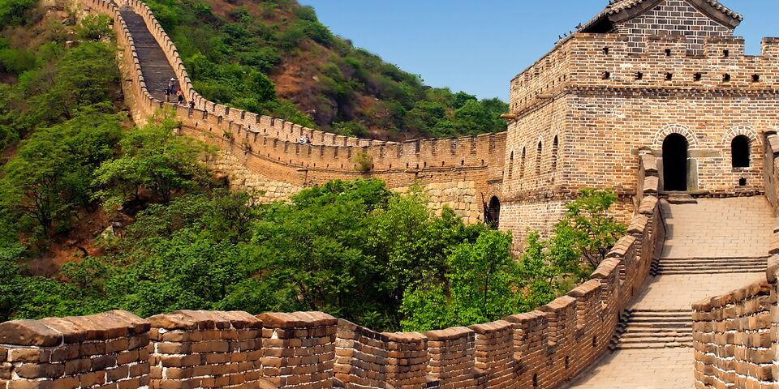
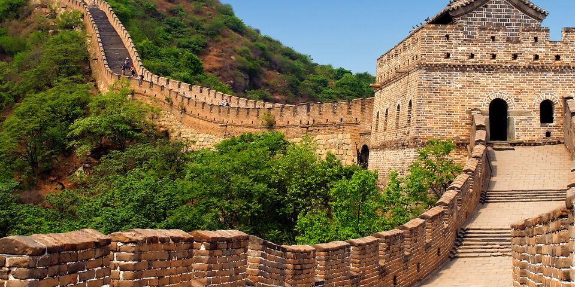

Eiffel Tower
2024-12-12 - Paris, France
A symbol of romance and French culture, the Eiffel Tower offers breathtaking views of Paris. Discover its history and enjoy the magical atmosphere from the top of this iconic landmark.
2024-12-12 - Paris, France
A symbol of romance and French culture, the Eiffel Tower offers breathtaking views of Paris. Discover its history and enjoy the magical atmosphere from the top of this iconic landmark.
 

2024-12-12 - China
Spanning thousands of miles, the Great Wall is a marvel of ancient engineering. Walk along its storied paths and immerse yourself in the history and beauty of China's landscape.

2024-12-12 - Peru
Nestled high in the Andes Mountains, this ancient Incan city is a wonder of architectural ingenuity and cultural significance. Explore its ruins and experience the mystique of this UNESCO World Heritage site.